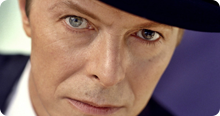
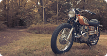
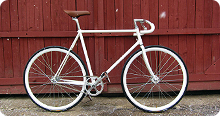

TaxiCaller
декабрь 2012 - март 2013

Привет! Меня зовут Иван Белобородов. Я родился и вырос в Ижевске, столице Удмуртской Республики. Последние несколько лет занимаюсь проектированием и дизайном мобильных приложений на базе iOS и Android. В данный момент живу в Москве и ищу постоянное место работы.
Испытываю страсть к девайсам, имеющим touch-интерфейс, классическим мотоциклам, немецкому пиву, анлийской музыке и французскому кино.
UX Дизайнер
Январь 2011 — июль 2013
Дизайнер мобильных интерфейсов
август 2012 — июнь 2013 (внештатно)
Дизайнер мобильных интерфейсов
Апрель 2012 — июнь 2012 (внештатно)
Дизайнер веб и мобильных интерфейсов
Сентябрь 2010 — январь 2011 (внештатно)
Веб-дизайнер
март 2009 — январь 2011
User Exprerience
С 2010 года
Дизайн мобильных интерфейсов
С 2011 года
Веб-интерфейсы
С 2010 года
Balsamiq Mockups
август 2013
Diablo III
29 сентября
iA Writer
позавчера
Lightroom 4
сентябрь 2013
Skala Preview & View
вчера
Xcode
май 2013
декабрь 2012 - март 2013
май 2013 — ...

ноябрь 2012 — февраль 2013

Июнь 2012 — Март 2013

Музыка
Мотоциклы
Кулинария
Велоспорт
